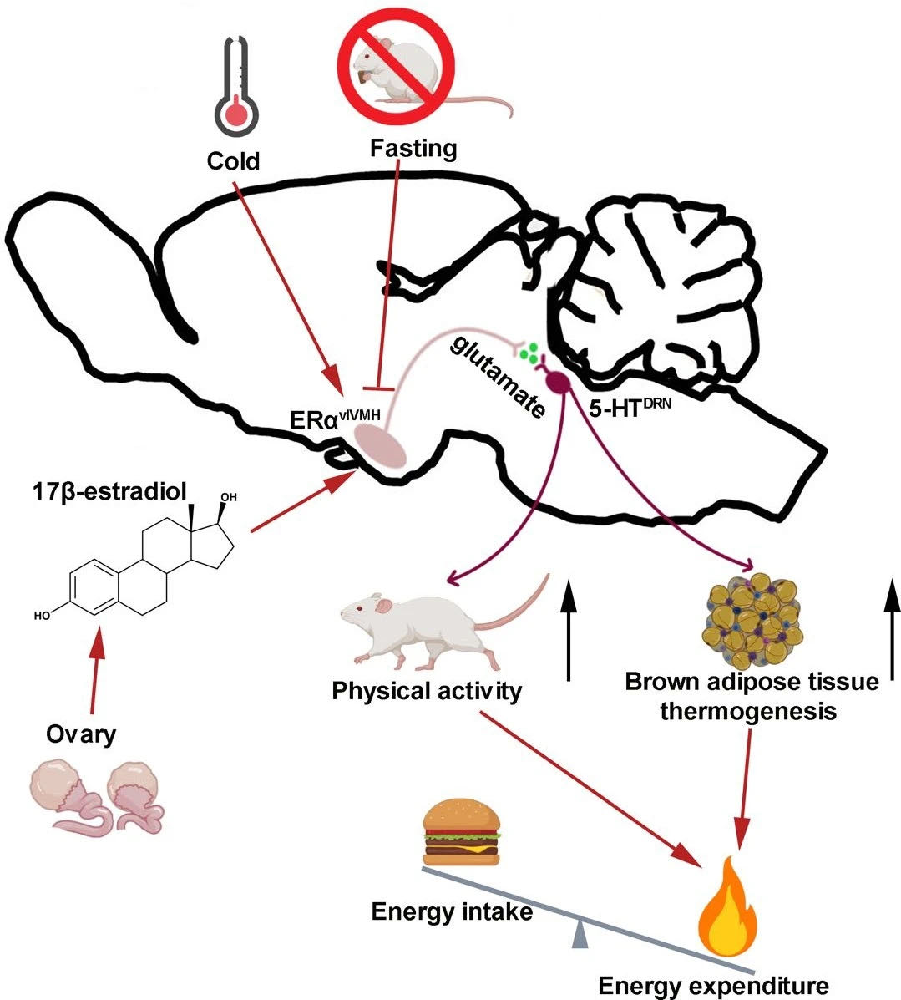
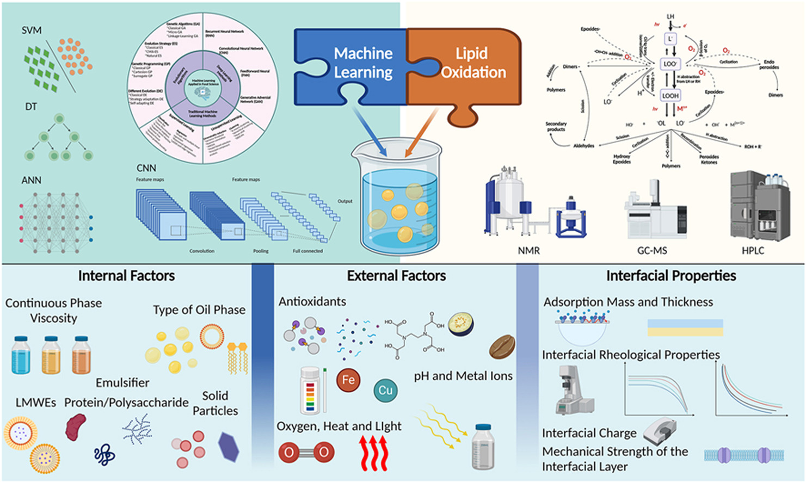

Highlighted Publications
27-Hydroxycholesterol acts on estrogen receptor α expressed by POMC neurons in the arcuate nucleus to modulate feeding behavior.
Authors: Ye, H., Yang, X., Feng, B., Luo, P., Torres Irizarry, V. C., Carrillo-Sáenz, L., ... & Xu, P.
Journal: Science Advances, 10(28), eadi4746.

An estrogen-sensitive hypothalamus-midbrain neural circuit controls thermogenesis and physical activity
Authors: Hui Ye, Bing Feng, Chunmei Wang, Kenji Saito, Yongjie Yang, Lucas Ibrahimi, Sarah Schaul, ... & Yong Xu.
Journal: Science Advances, 8(3), eabk0185.

Machine Learning-Driven Predictive Modeling for Lipid Oxidation Stability in Emulsions: A Smart Food Safety Strategy
Authors: Lijun Liu, Lie Yang, Mengjie Zhu, Liqiang Zou, Chen Lv, Hui Ye
Journal: Trends in Food Science & Technology, 104972 (Published: 2025/3/14)

Selected Publications
2025
Construction of microencapsulated (−)-Epigallocatechin-3-gallate (EGCG) phospholipid-based nanovesicles: Enhancing stability, gastrointestinal resistance and masking bitterness
Authors: Chenlu Ma, Mengjie Zhu, Jin Liu, Xin Huang, Hui Ye, Lijun Liu, Liqiang Zou
Journal: Food Chemistry, Vol. 479, 143825 (Published: 2025/7/1)
Effects of Holothuria leucospilota polysaccharide on alleviating diabetic kidney disease through regulating inflammation
Authors: Xin Wen, Xin Zhang, Wanting Wang, Fuqiang Zhao, Mingyong Xie, Guomin Pei, Jun Cao, Hesham El-Seedi, Hui Ye, Jun Yang, Yuanping Zheng, Chuan Li
Journal: International Journal of Biological Macromolecules, 142027 (Published: 2025/3/12)
Insights into the relationship between the acetylation of Dendrobium officinale polysaccharides and the ability to promote sIgA secretion
Authors: Wenlei Nie, Xuecong Tong, Chewhui Pung, Jia Li, Hui Ye, Xiaojun Huang
Journal: International Journal of Biological Macromolecules, 140764 (Published: 2025/2/7)
Tenuifolin (Polygala tenuifolia) ameliorates corticosterone-induced endoplasmic reticulum stress and mitochondrial dyshomeostasis by reprogramming CLOCK in PC12 cells
Authors: Chaoyi Xue, Zhiyong He, Maomao Zeng, Zhaojun Wang, Qiuming Chen, Fang Qin, Leehow Lau, Yunke Yang, Hui Ye, Jie Chen
Journal: Food Bioscience, Vol. 64, 105851 (Published: 2025/2/1)
2024
Estrogen signaling in the dorsal raphe regulates binge-like drinking in mice.
Authors: Torres Irizarry, V. C., Feng, B., Yang, X., Patel, N., Schaul, S., Ibrahimi, L., ... & Xu, P.
Journal: Translational Psychiatry, 14(1), 122.
Naringin ameliorates obesity via stimulating adipose thermogenesis and browning, and modulating gut microbiota in diet-induced obese mice.
Authors: Li, X., Yao, Z., Qi, X., Cui, J., Zhou, Y., Tan, Y., ... & Ye, H.
Journal: Current Research in Food Science, 8, 100683.
Other Publications
Explore more publications on Google Scholar.